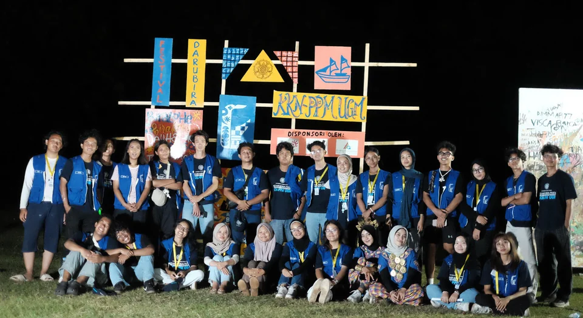
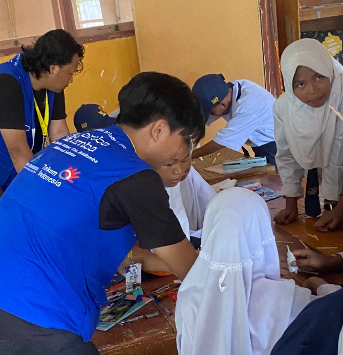
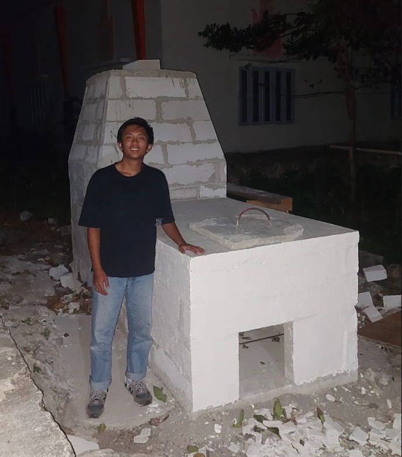

Community Service —
KKN PPM UGM Kareba Kumba 2025
Participating in Universitas Gadjah Mada's prestigious Kuliah Kerja Nyata Pembelajaran Pemberdayaan Masyarakat (KKN PPM) program at Kareba Kumba, contributing civil engineering knowledge and skills to support rural community development.

About KKN PPM UGM
KKN PPM (Kuliah Kerja Nyata Pembelajaran Pemberdayaan Masyarakat) is UGM's flagship community engagement program that sends interdisciplinary student teams to rural communities for an extended period. Unlike a simple service trip, KKN PPM is designed around sustainable community empowerment — working with, not just for, local communities.
As a civil engineering student, participation in KKN PPM offered a unique opportunity to apply technical skills in real community contexts, bridging the gap between academic knowledge and grassroots development needs.
Activities & Contributions
- Assessment of existing village infrastructure and identification of improvement priorities
- Technical assistance and consultation for local infrastructure planning
- Community workshops on basic civil engineering topics relevant to local needs
- Collaboration with interdisciplinary team members from other faculties
- Documentation and reporting of community conditions and program outcomes
Key Learnings
KKN PPM was a formative experience that deepened understanding of how engineering solutions must be adapted to local social, economic, and cultural contexts. It reinforced the importance of community participation in infrastructure planning and the role of engineers as facilitators, not just technical problem-solvers.

